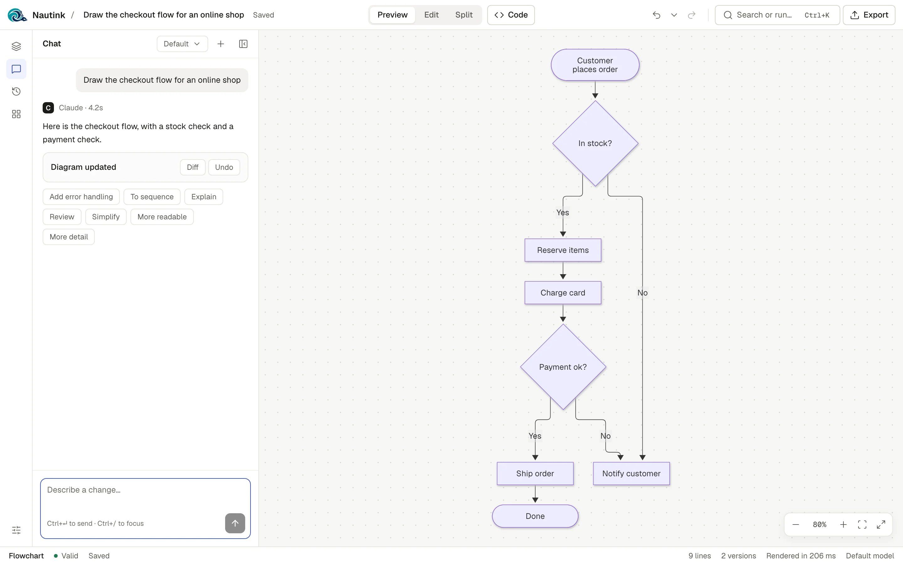
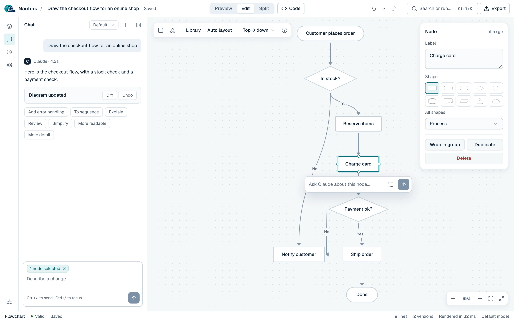
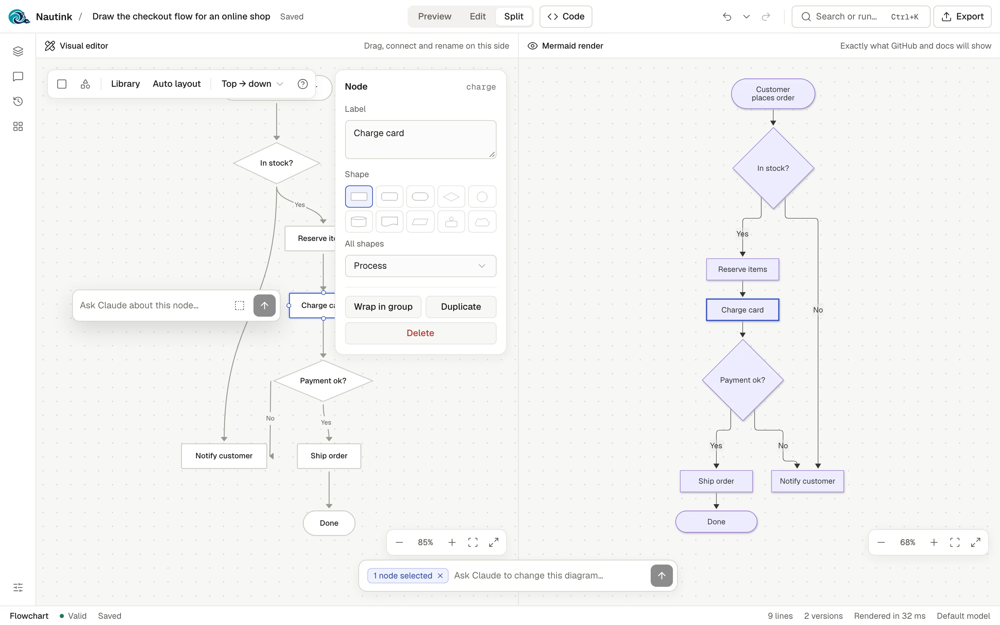
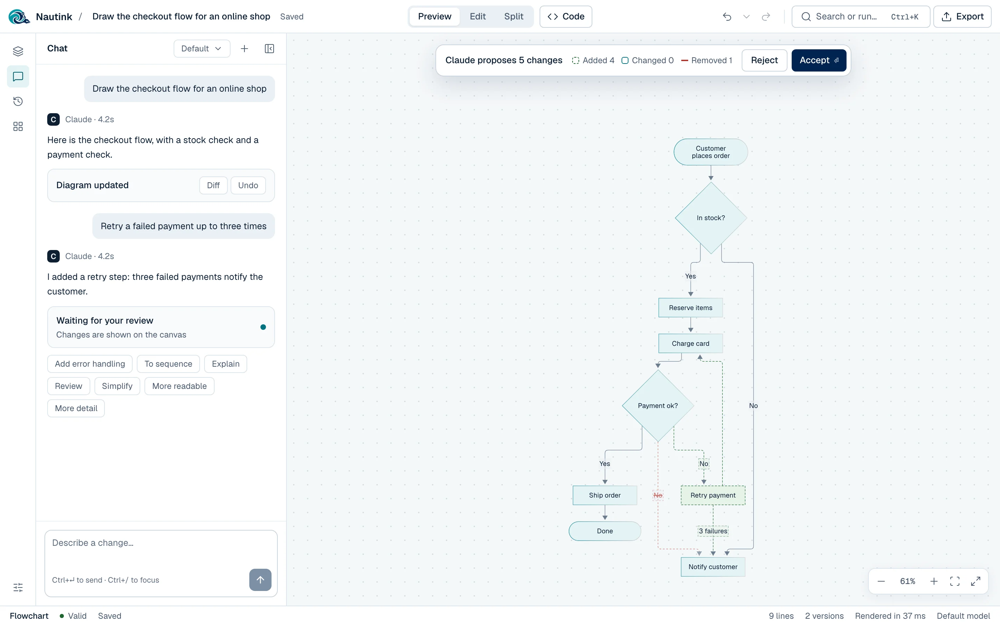
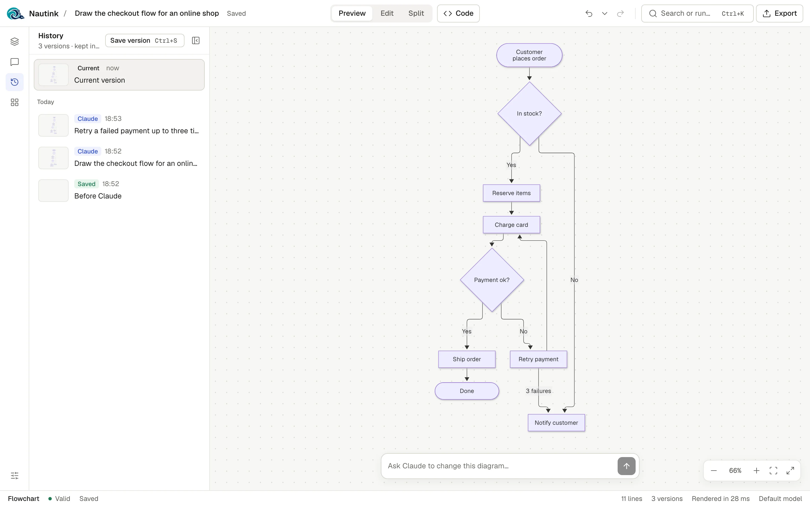

Open sourceLocal-firstMIT
Draw Mermaid diagrams by hand, in code, or with Claude.
Nautink is one canvas for Mermaid. Ask Claude for a change and it shows up as a proposal you accept or reject. Your diagrams stay in your browser, and the chat runs through your own Claude Code.

Review before apply
Claude proposes. You decide.
Every change Claude makes lands on the canvas as a proposal. New parts are dashed in green, removed parts are struck through, and nothing is saved until you say so.
- Accept with Enter, reject with Esc.
- Accepting is one undo step and one saved version.
- If Claude's code does not parse, Nautink asks it to fix it.
Try it: a flowchart with a proposed change from Claude, which you can accept or reject.
Retry a failed payment up to three times
I added a retry step: three failed payments notify the customer.
One canvas, three ways in
Chat, drag, or type. It is all plain Mermaid.
Every visual edit writes Mermaid code, and every line of code updates the canvas. What you see is what GitHub and other Mermaid hosts will show.
Five visual editors for flowcharts, UML class, sequence, ER and state diagrams. Drag shapes, draw links, and tune each part in a floating inspector.

Split puts the visual editor beside Mermaid's own render, with the selection mirrored between them. Click a shape in Preview to jump to its line of code.

Chat with Claude. Describe a diagram or a change and watch it build on the canvas. Select a few nodes to ask about just those, and Claude leaves the rest alone.

History and versions. Undo and redo cover every change. Each Claude edit saves a version: view, compare and restore up to 50 per diagram.

Features
Everything a diagram needs, nothing it does not.
-
Live build
While Claude replies, new nodes fade in on the canvas as they arrive.
-
Pick your model
Default, Opus, Sonnet or Haiku. Stop a reply, or use a quick action under it.
-
Codebase-aware chat
Let Claude read a project folder, read-only, so it draws your real architecture.
-
Code drawer
Monaco with Mermaid highlighting, autocomplete per diagram type, and errors on their line.
-
Many diagrams
Search titles and content, filter by type, pin, rename, duplicate and delete with undo.
-
15 templates
Starters for process, software design, data, planning and charts.
-
Export anywhere
SVG or PNG, copy the image, code, Markdown or an HTML embed, or open in mermaid.live.
-
Import and back up
Drop
.mmdor Markdown files in. Back up everything to one JSON file. -
Keyboard first
⌘K reaches every action. Light, dark, or follow your system.
How it works
Three small pieces, all on your machine.
-
Browser
Nautink web app
Canvas, editors and chat. Every diagram, chat and version lives in IndexedDB.
-
Your machine
Local server
Listens on
127.0.0.1only. Turns each message into one Claude Code run. -
Your login
Claude Code CLI
Runs
claude -pwith no tools, unless you pick a folder for read-only access.
Privacy
No account. No cloud. No telemetry.
Your diagrams never leave your browser, except when you send a chat message. Then your own Claude Code sends the diagram and your message to Anthropic, exactly as if you used Claude Code yourself.
- No sign-up. Clone it, run it, use it.
- No analytics. The app tracks nothing.
- No third-party calls. Fonts and icons are bundled.
- Works without Claude. Everything but the chat runs offline.
Up and running in a minute.
You need Node 22, pnpm 9, and Claude Code logged in for the chat.
git clone https://github.com/NatanGer97/nautink.git
cd nautink
pnpm install
pnpm devThen open http://localhost:5190.